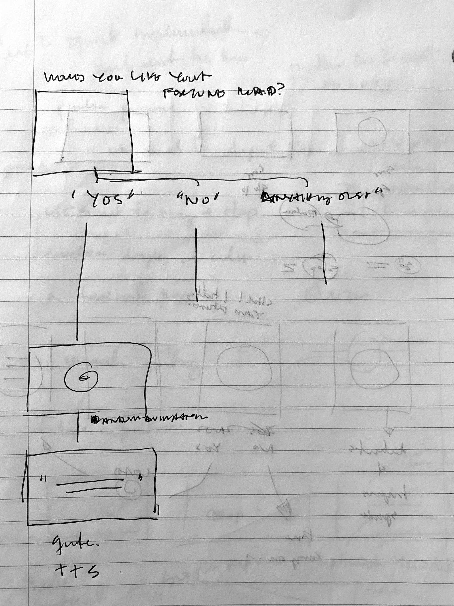
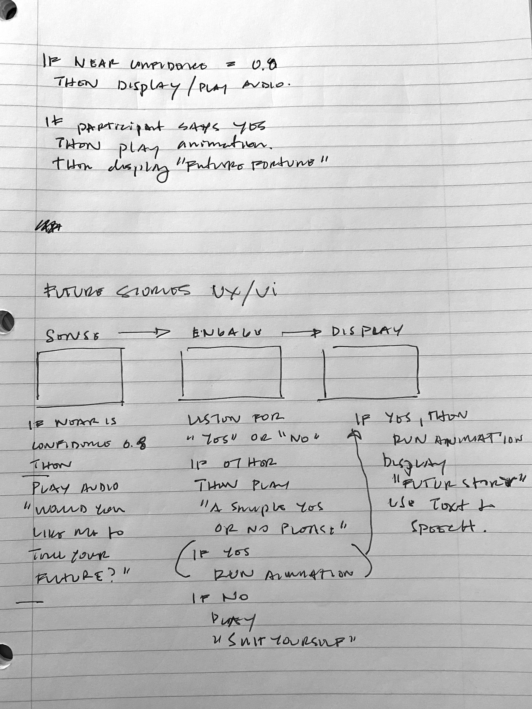
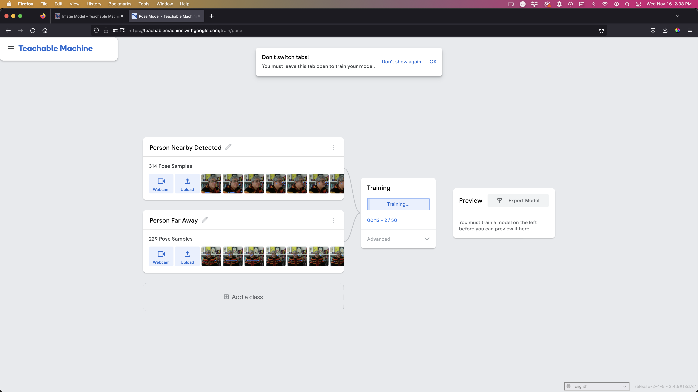
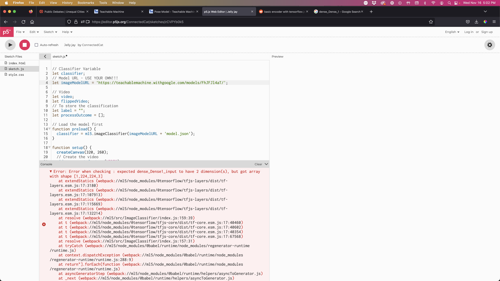
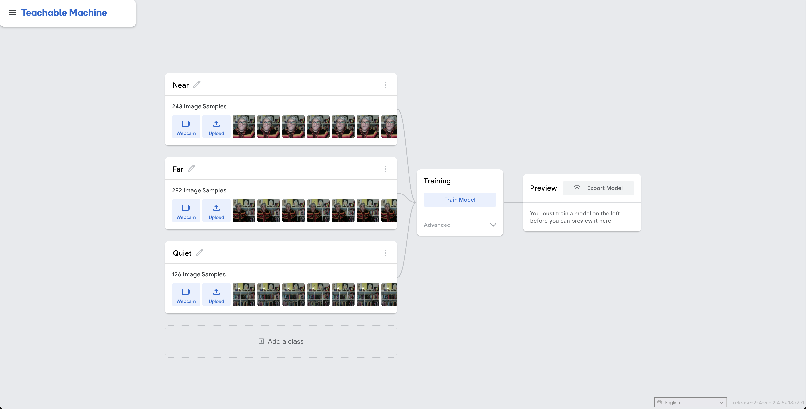
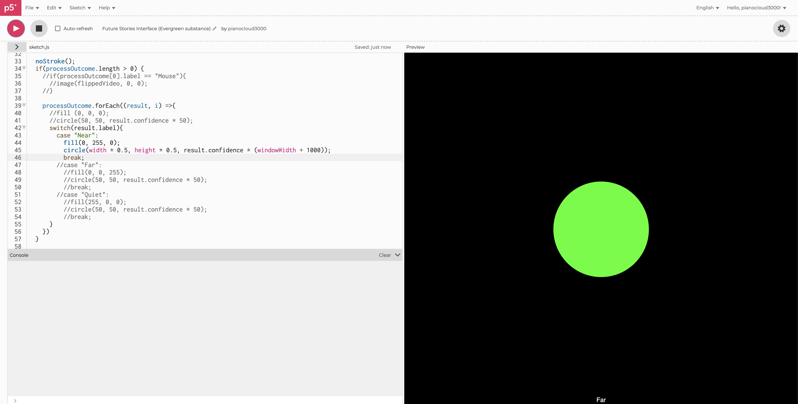
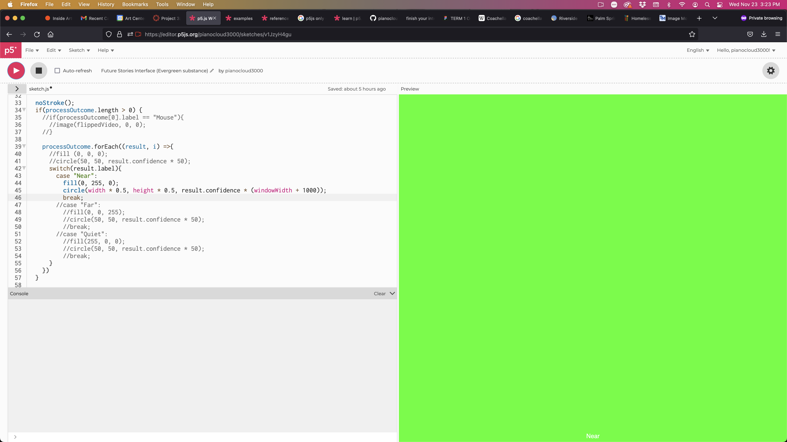
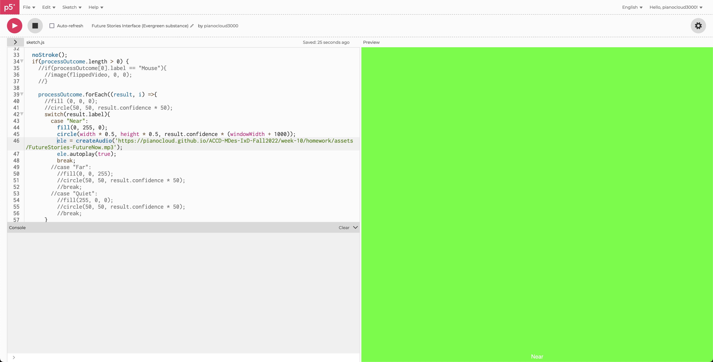

single channel controller
by pianocloud
Create a simple signle-channel controller that would allow you to change one parameter in a Processing program by applying a value received from ESP32 via serial communication. Experiment with the parameters you can control with the values.
- Work with code from the workshop.


- Adjust color

- Worked with Maxim's example from class, but it didn't work. It took a while but finally realized I used Pose classifier instead of Image classifier which was a critical error. Lost time here.

- Retrained machine using Image Classifier, and everything worked.

- Next, I wanted to get the machine to do something when its confidence for something "Near" was 0.9 or greater. I got it to display a large green circle when something appeared "Near."


- After, I worked on having the audio play. I got it to sort of work. Somethign in the code made it warp. Investigating.
